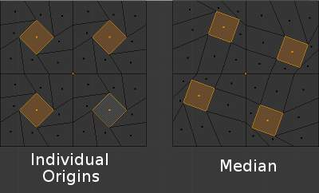
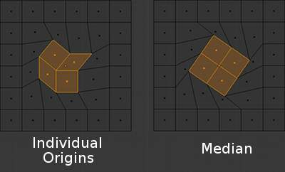
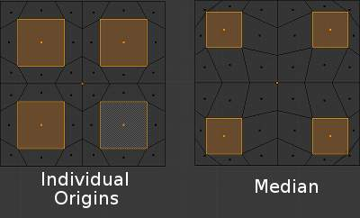
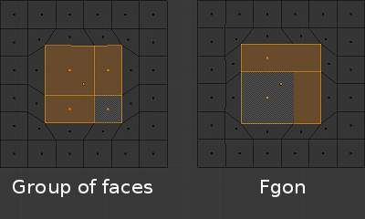

各自的原心¶
参考
 图标选择.
图标选择.Ctrl-.在物体模式¶
{kind=link}
围绕各自原心旋转.
一个物体的原心在3D视图中以橘黄色的小圆圈表示.在图片右侧用红色箭头显著标示了. 原心告诉Blender物体在3D空间中的相对位置. 你在3D视图中看到的(顶点, 边 等等)是物体的组成.
当原心等价于物体的中心时,不必位于网格的中心. 这就意味着一个物体的中心可以位于网格的一端,甚至完全在网格的外部. 例如,图片中橘色的矩形的原心位于网格左侧很远的位置.
Now let us examine: Rotation around the individual origins.
- The blue rectangle has its Origin located in the center of the mesh, while the orange rectangle has its Origin located on the left hand side.
- 当轴心点设置为各自的原心, the center of each object (红色箭头标示的) remains in place while the object rotates around it in the path shown by the black arrow.
在编辑模式¶
在编辑模式, setting the 轴心点 to 各自的原心 produces different results when the selection mode is set to Vertex, Edge or Face. For example, Vertex mode produces results similar to setting the 轴心点 to median and Edge mode often produces distorted results. Using 各自的原心 in Face mode produces the most predictable results.

Rotation of individual faces with the 轴心点 indicated by the image text. |

Rotation of grouped faces with the 轴心点 indicated by the image text. |
{kind=link}
{kind=link}
As can be seen in the images above, faces that touch each other will deform when rotated when the 轴心点 is set to 各自的原心. Faces that do not touch will rotate around their 各自的原心 (their center).

Scaling with non-touching faces. |

Scaling with touching faces. |
{kind=link}
{kind=link}
Groups of faces and Fgons can be scaled without their outside perimeter being deformed. However, the individual faces inside will not be scaled uniformly.
{kind=link}
建模 with faces and individual origins as the 轴心点.
Once you are aware of its limitations and pitfalls, this tool can save a lot of time and lead to unique shapes. This “anemone” was modeled from a 12 sided cylinder in about 10 minutes by repeatedly using this workflow: extrusions of individual faces, scaling with median as a 轴心点, and scaling and rotations of those faces with 各自的原心 as 轴心点s.